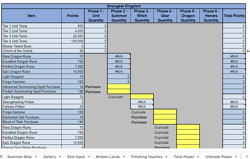

Ultimate Calculator

Version 5.0.1. Created by Disirk
This release is a 2-sheet system. The goal here is to allow you to keep track of your data, and then when minor fixes to the calculator come out you don't have to re-enter everything every time.
- Make a copy of the data file. Enter data of your account (available resources and levels)
- After you finished entering data, "share" the data file with the permissions of "Anyone with Link" is a viewer.
- Make a copy of the Calculator file. In the Overview page, paste this shared URL into the "Data Import URL" field. All the data from the data file will be imported into the the calculator. There are still fields you need to update, and they will be highlighted in yellow, while the fields with imported data will be in a light purple.